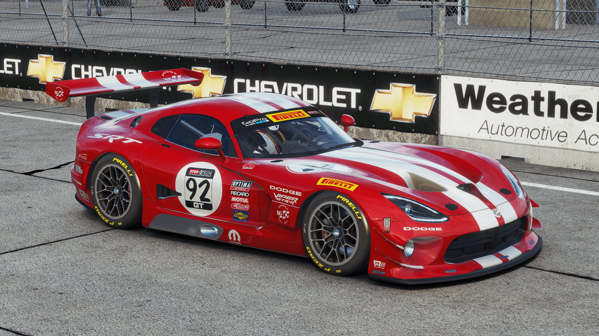
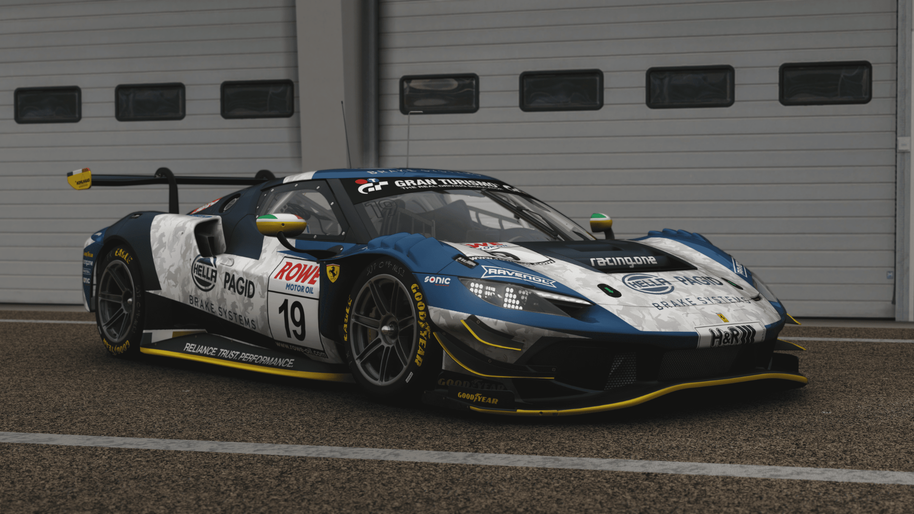
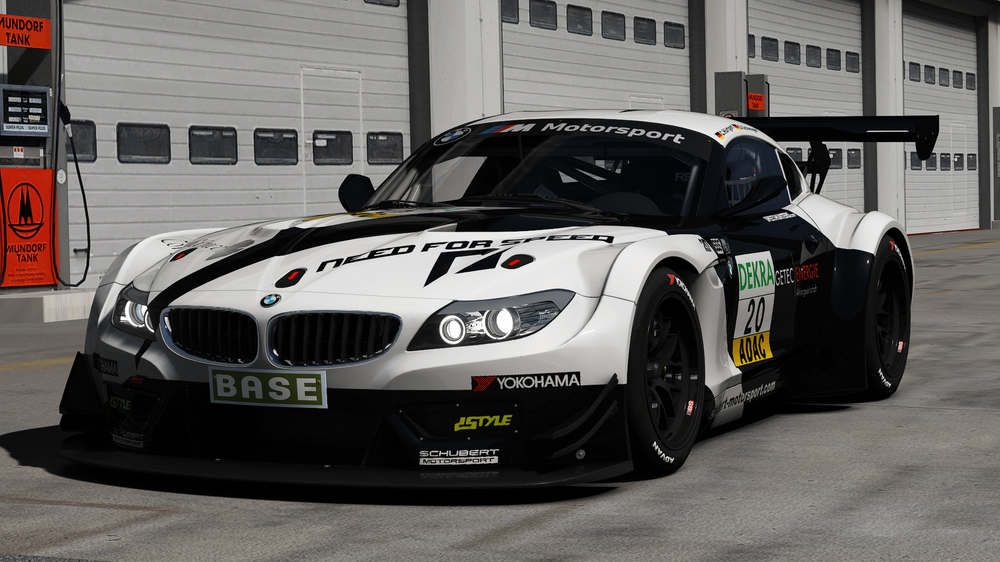
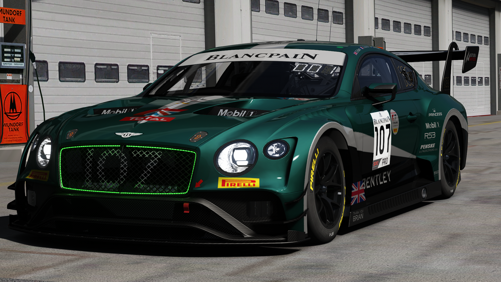
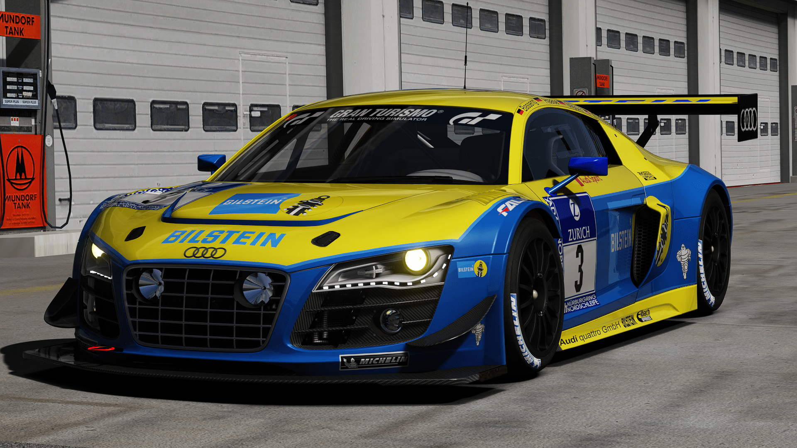
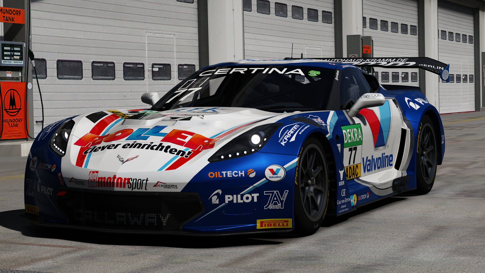
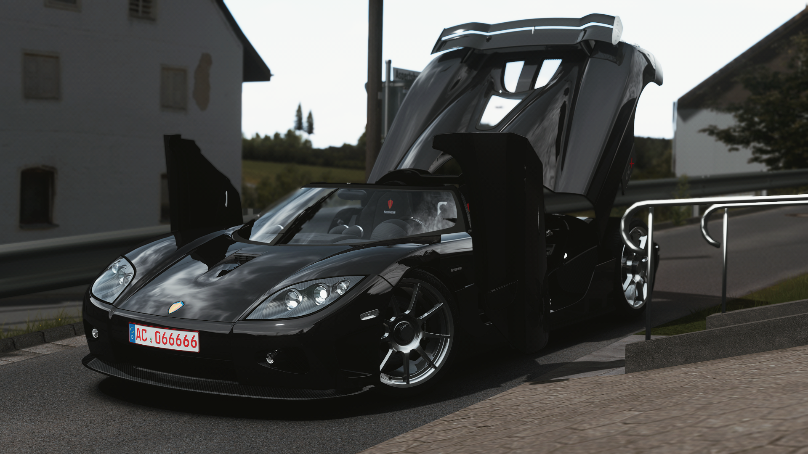
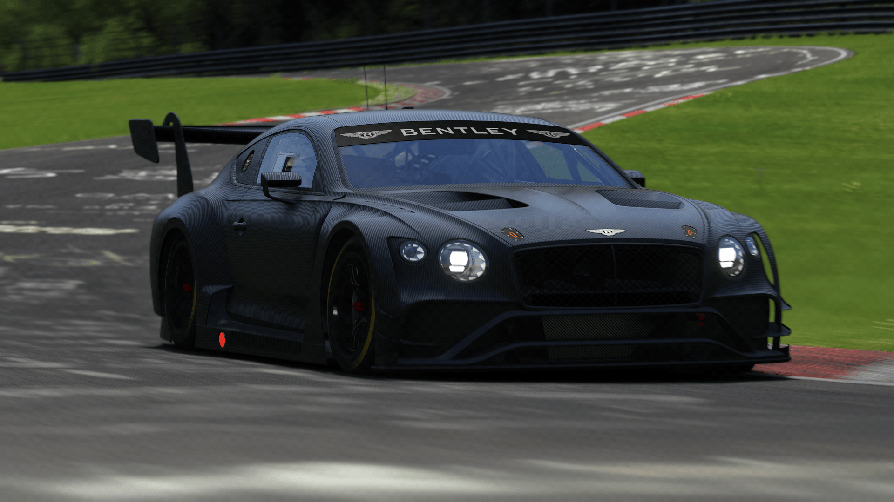

ChemFlummi Modding
Assetto COrsa Modding
About My Mods
Blablub wieso mach ich mods
Modding with <3
Discord: ChemFlummi#5977

Unter der Haube des 296 GT3 befindet sich ein leistungsstarker V6-Motor mit Turboaufladung und Hybridtechnologie. Dieses innovative Antriebssystem kombiniert einen Verbrennungsmotor mit einem Elektromotor, um eine eindrucksvolle Leistung zu erzeugen. Der 296 GT3 verfügt über eine Gesamtleistung von mehr als 600 PS und bietet ein schnelles und dynamisches Fahrerlebnis auf der Rennstrecke.
Download

Congratulations to the Frikadelli Racing Team for winning today's race!
To celebrate this victory, I release today my 296 GT3 on this server
Model and physics again from ACC and he has the usual features.
SADLY we have to do without the Frikadelli skin for the 1st, this is I think not yet finished.
But he will be soon by @B2B2B subsequently.
But both Racingone Skins from @Creativehighway are included and 4 Skins from @Fundee Motorsport Photography™ in addition to the Carbon Skin.
I hope you have fun with the car and can drive as confidently as the Frikadelli team did the last 24h!
Sound is from Ty_playz from Racedepartment and I was allowed to use it.
BOP of the car to the others is in work, I personally would start at 50kg.
Anyway have fun!
Version 1.1:
Changed Motion Ratio because of too soft dampers
Spring rates adjusted
Base Setup improved
Ride height realigned
Version 1.3:
Complete suspension rework (car had big problems over Curbs)
Lowered base tire pressure
Fixed Autoshifter
Download

Here is the new car today:
The BMW Z4 GT3
It has 3 different Endu Specs + the Sprint Spec.
The Z4 is one of the most popular GT3 cars and the kunos model is quite old and inaccurate.
Thats why I decided to go for a new GT6 based port with some additional suspension and engine Parts from Pcars and the Scratch made Endurance specs made by me
As usual there is a template skin for each Spec but this time included in a rar file inside the car folder.
In addition to that there is a pdf file for more tips about skinning the Z4.
Physics are mostly kunos based with some minor adjustments to fit the GT3 reglement better.
I hope you'll like the new car
Functions:
Disable DRLs via EXTRA_A on the Sprint spec
Switch Display page via EXTRA_B
special thanks to Marcel Erner from Guerilla mods for the 4 N24h skins and the exhaust texture
Download

Today a new Release from me:
The Bentley Continental GT3 2018
The car has the following features:
Sprint and Endu Kit
LED Lights via Config
Working SAS Display + Racelogic with switchable Pages via EXTRA_A
DRL on of under idle RPM or via EXTRA_B
Rain Tires + physics
Sound by Corsamode
The car is pretty easy to drive, it is just a little bit edgy out of the corners.
Included in the car folder is a PDF File with all the needed informations for skinning
 Download
Download

Today it's the turn of the two Reiter Engineering cars:
the SaReNi Camaro GT and the Reiter Gallardo R-EX GT3.
Once again, the cars were made with a lot of passion and they have many different features:
Gallardo:
fully functional display and Racelogic with 2 pages each (use EXTRA_A and EXTRA_B to change).
Sprint and Endu configuration depending on the skin
realistic physics based on real data
fully working lights outside + inside
Wobbling Exhaust
damage and dirt textures
Rain tires + physics
windshield wipers + automatic rain light
fully animated rear wing with correct bolt position for all 15 slots
Sound by @SoundModFella
Camaro:
fully functional display with 2 pages (use EXTRA_B to change)
daytime running lights can be deactivated by EXTRA_A
all years with their bodykits
realistic physics based on real data
fully working lights outside + inside
rain tires + physics
windshield wipers
Together both cars are probably the white beauty and the black beast
Thanks to all who helped and I hope you are looking forward to the underdogs of the GT3 sport.
 Download
Download

Here it is, the Audi R8 LMS Ultra Endu Spec
It is just a skin config for the kunos one
It comes in 3 Versions:
Endurance with Swan neck wing
Endurance with old style wing (Bilstein Audi R8 for example)
Sprint Spec with the old style wing
Addon Models from GT6 or scratch made
To use it in your skin, just look for the correct skin folder and take the config
ATTENTION: The old style wing has a new baked AO map because of the missing shadows of the swan neck, so please use the psd file for that!
And now have fun with this car
Download

Here it is, the long-awaited C7 GT3-R!
For me one of the best and most beautiful GT3 cars of all time!
I'm really glad that I had the opportunity to work on this car!
T
his was made possible by @Von Boyage, who gave me the base model from RF2.
I did a lot of remapping and remeshing to make the car look good and I hope I succeeded!
The standard version is unrestricted, but recommended restrictor settings of the Fia are given in the information, then racing with the URD M4 should be possible.
Have fun with the car and give me feedback!
Big thanks to @CaddyDPi too for some of the skins!
EXTRA_A - Display Page
Low/higbeam - endulights, if present
Working indicators and reverse light
Specs:
Power: 587PS
Torque: 660NM
Weight: 1190kg
ca. 290 km/h Top Speed
Enough Downforce, to take every corner
Download
Heute mal was spezielles für euch:
Unser Community safety Car!
Nach der Abstimmung wurde es ja der Alfa Romeo 4C, welcher so alleine etwas langweilig ist..
Deswegen hab ich noch ein kleines Scratch made Aero Kit gebaut, um das Auto besser auf die LMPs abzustimmen!
Zusätzlich gab es etwas größere Turbolader, damit der Alfa auch schnell genug aus der Kurve kommt
Das etwas andere Projekt hat mir viel Spaß gemacht, hoffe euch gefällt die kleine Rennsemmel auch
Orange blinkendes Safety Car Licht geht über EXTRA_A an (ein csp Knopf in den Einstellungen, standardmäßig Alt+Num7)
Und die beiden grünen freigegeben Lichter über EXTRA_B (standardmäßig Alt+Num8)
Download

The Audi R10, a race car from 2006 and the first Diesel LMP.
Sadly there are no good mods of this time..
I found this R10 somewhere and updated it to todays standards
The model is from Forza Motorsport 4, but a very bad conversion
So I started to study the specs of the car and wanted to be as near as possible to the real car:
Original: 650HP, 1100+NM
Mod: 650HP, 1177NM
Its weight is 925 kg and you can fill 81 Liters in it.
The highlight of the Mod are the animated Winglets on the Front and the Light Refraction in the front lights
The base Setup is very balanced and if you are not happy with it, you can change all things that are changable in AC xD
Have Fun with the Car
Yours Max
Download

Der Koenigsegg CCX
von 2006-2010 gebaut
Dabei entstanden 49 Fahrzeuge.
Der CCX ist das letzte Fahrzeug der CC Reihe und das X stellt die römische Zahl 10 dar, was auf den ersten Prototypen von Christian von Koenigsegg im Jahre 1886 anspielt.
Angetrieben von einem 806 PS starkem 4,7l V8 mit 2 Kompressoren soll es das Auto in 3,2 Sekunden auf 100 km/h schaffen und einen Top speed von etwas über 390 erreichen.
meine Version orientiert sich an einem Prüfstandlauf des Autos.
Download

Have Fun and Keep Racing!